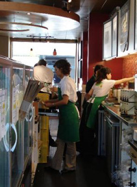
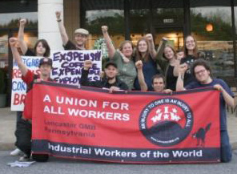

Submitted on Fri, 05/25/2007 - 11:15am
By Dean Dempsey and the Sbux Organizing Committee
 For the Global Day of Action for Starbucks workers, the Starbucks Organizing Committee of the Bay Area General Membership Branch gathered outside a Starbucks location in Oakland, CA, to pass out fliers and to talk to the public.
For the Global Day of Action for Starbucks workers, the Starbucks Organizing Committee of the Bay Area General Membership Branch gathered outside a Starbucks location in Oakland, CA, to pass out fliers and to talk to the public.
Before the distribution of union literature outside the store, two wobblies went inside the Starbucks to talk to the workers about what we were doing and what the Starbucks Workers Union (SWU) is all about.
Out of the four workers we talked to, three of them were in support of the idea of unionizing. Their main grievances were their low wages, treatment from both customers and management, and most of all, their inability to have sufficient and secured hours. Two contacts were made.
Submitted on Thu, 05/24/2007 - 1:09am
 Solidarity to SWU from Starbucks Baristas in Geneva, Switzerland!
On the occasion of the May 17th Day of Action to commemorate the third anniversary of the founding of the IWW Starbucks Workers Union [StarbucksUnion.org], we, the undersigned workers/baristas employed at Starbucks here in Geneva, Switzerland, convey our greetings to our comrades in the United States. We salute your direct action, solidarity form of unionism, and your creative and courageous struggle to use it as an instrument for gaining workers' democratic control and dominion over their own human labor. Vive la lutte et la solidarité globale!
À l'occasion du 17 du mai jour d'action pour commémorer le troisième anniversaire de la fondation du syndicat d'IWW Starbucks [StarbucksUnion.org], nous, les travailleur(se)s/baristas sous-signé(e)s de Starbucks ici à Genève, Suisse, transmettons nos salutations à nos camarades aux Etats-Unis. Nous saluons votre style de syndicalism action directe et solidaire, et votre lutte créatrice et courageuse pour l'utiliser comme instrument pour gagner du dominion et de l'autonomie démocratique des ouvrier(ère)s eux(elles)-mêmes sur leur propre travail humain. Vive la lutte et la solidarité globale!
Submitted on Thu, 05/24/2007 - 1:02am
The broadcast will discuss Liza Featherstone's recent Notion post (http://www.thenation.com/blogs/notion?pid=196455) detailing new legal and political troubles for Starbucks over its treatment of its workers and its anti-union efforts.
 In New York, the National Labor Relations Board has accused Starbucks of violating workers' freedom of association in about thirty different ways, including illegally firing, threatening and disciplining workers for supporting the union. Managers forbade workers from talking about the union -- even when off-duty -- or wearing union buttons. The trial against Starbucks is in July. Liza Featherstone, author of , will report from the trial for her blog. Liza will be joined in studio by Pete Montalbano, a Starbucks barista and IWW member who is a veteran of the campaign.
In New York, the National Labor Relations Board has accused Starbucks of violating workers' freedom of association in about thirty different ways, including illegally firing, threatening and disciplining workers for supporting the union. Managers forbade workers from talking about the union -- even when off-duty -- or wearing union buttons. The trial against Starbucks is in July. Liza Featherstone, author of , will report from the trial for her blog. Liza will be joined in studio by Pete Montalbano, a Starbucks barista and IWW member who is a veteran of the campaign.
Submitted on Thu, 05/24/2007 - 12:58am
Starbucks protest in Lancaster, PA draws 30
by John Schreck
Lancaster, PA - On May 17th, the Lancaster branch of the Industrial Workers of the World and the Lancaster Students for a Democratic Society protested for over three hours at the Columbia Avenue store in solidarity with the IWW-Starbucks Workers Union. At the peak of the event 25 demonstrators were in attendance and approximately 30 people attended all together.
Three years after the founding of the IWW Starbucks Workers Union, the organization has members in multiple U.S states successfully using Direct Action to rise out of poverty and articulate an independent voice on the job.
To silence worker voices, Starbucks has disgracefully terminated eight SWU baristas in retaliation for their union activity. The SWU has prevailed against Starbucks to reinstate two of the members but six
remain out of a job. Despite multiple Labor Board complaints, the coffee giant continues to punish baristas for discussing the union and relentlessly forces union-busting propaganda down workers throats. Starbucks must understand that working people of conscience will not allow this affront to the dignity
of our class.
Submitted on Thu, 05/24/2007 - 12:55am
 The French CNT organized actions of solidarity with the IWW Starbucks campaign as part of the global commemoration of the union's third anniversary.
The French CNT organized actions of solidarity with the IWW Starbucks campaign as part of the global commemoration of the union's third anniversary.
CNT activists entered the 4 biggest Starbucks in Paris to distribute flyers to the costumers and the workers until being expelled by nervous management. One nervous manager told the activists he had been alerted that the, "CNTists were coming!"
The CNT members were joined at the action by two members of the Industrial Workers of the World. The CNT has pledged further actions and to stand behind the Wobbly baristas until victory.